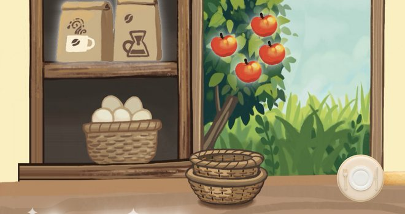

Food Truck Cafe
24 November. 2026.11.23 is live on the App Store; test build 2026.11.23 (3) is in TestFlight.
1Next
You
Release 2026.11.23 is approved and out (24 November; it can take some hours to reach every country's store).
Your App Store session (player ec14c6, 2026.11.23, times Pacific): tutorial 10:37; day 1 three stars, days 2 to 4 two stars each; an ad after every day, all watched to the end, and the coin ad once (11:37); bought Upgrade, Juice, Grandma, the green pot and the yoga lady; day 5 started 11:42. Every event arrived; ads loaded every time on your phone. Your id stays out of all player counts.
Done from your ticks: Cookie sprinkles stars, the ad from day 3's start, bonus days, bigger stickers, the Perfect sound and the smaller map truck are all in (MVP).
Test build 2026.11.23 (3) is in TestFlight with the first four items in MVP; the rest go into the next build.
Day 3 candy jar: three ways to show its arrival, videos in Current. NEW tags on the baking tray and mixer fixed (Current).
Header: D3 with more on the tray and around it (E1 to E3) in Current.
C chapter: three new ChatGPT drafts (fewer rules, watercolor, pink cloth) on its tab.
Me
I watch the review and tell you when the release is live, build 3 is ready.
2Q&A
Why are the baking tray and mixer set made by code, not placed in the kitchen picture? (24 Nov)
- How it came about: they arrived with the new kitchen flow (20 November), after the movable kitchen of 16 November. They were added the same way as that kitchen's moving parts: built in code when choux or cake is on the menu.
- Pros:
- They only exist when needed. The mixer set appears with choux or cake and takes the whisk's place; without them the kitchen keeps the plain whisk.
- They are found a free spot on the counter the first time, so they never land on another piece.
- Their size, shadow and look can be changed in code. Editing the kitchen scene file directly is risky: a slip there can break links in the scene.
- The kitchen flow (choux and cake stages, the mixer running) works on them directly.
- Cons:
- The rules attached to the scene's pieces (the NEW tag, show and hide by menu) do not reach them by themselves. That is how the NEW tag was missed.
- They do not show in the Unity editor until the game runs.
- My view: keep them in code. The NEW tag is now given to them directly, and I checked the other scene-only rules: show and hide by menu is already in their code. Moving them into the scene would mean redoing the free-spot search and the flow links for little gain.
3Current
Header: D3 with more on the tray and around it (24 Nov) D3's tilted tray on the awning background; every tray stays whole inside what an upright iPhone shows (dashed lines).
![Three header banners on cream with mint dots under a mint and white striped awning, each with a slightly tilted metal baking tray in the middle. E1: twelve food cookies in three rows of four (cake, choux, bread, apple, juice, candies, ice cream, coffee, coconut, bread basket, apple basket), eight customer cookies in an arc around the tray, small apple, juice, choux, coffee and candies cookies, hearts and sparkles on the background. E2: twelve foods in neat rows, customers standing at both sides of the tray, small foods floating in the top corners, candies and a heart under the tray. E3: ten foods staggered three, four, three with little hearts between them, the arc of customers, a few small floating foods, candies and sparkles. Then each on an iPhone store page](hdre_header.jpg)
- E1: D3 with more of the same: twelve foods in three rows of four, the arc of all eight customers, small foods, candies, hearts and sparkles around.
- E2: a denser tray in neat rows (twelve), customers standing at both sides, small foods floating in the corners, candies under the tray.
- E3: my balance: ten foods staggered 3-4-3 with little hearts between, the arc of customers, a few floating foods, candies and sparkles.
- All eight customer cookies are used; the extra background items are small food cookies, candies, hearts and sparkles.
NEW on the baking tray and the mixer set too. 24 November; not in a build. The kitchen while arranging, the day after choux is bought.

- The tray and the mixer are built by code rather than placed in the kitchen picture, so the NEW rule never reached them; only the fruit board had it. Now the tray is NEW with choux, and the mixer set with choux or cake.
Day 3: the candy jar arrives with 2 candies. Three ways to show it. 24 November; not in a build. Videos with sound (recorded in the editor; in the game the day waits while it plays).
- Before day 3: no candy jar on the table and no candies in the shop. After day 3 the shop sells candies, with a NEW tag.
- 1. Gift card: a paper card like chapter 2's gift, "A GIFT FOR YOU!". The empty jar pops in, two candies drop in, and the line says what it does. Let's go sends the jar to its spot on the table.
- 2. Drops onto the table: the jar drops onto its spot with a bounce, two candies fall in, a note beside it says what it does, and a hand points at the jar.
- 3. Sparkle and a banner: the jar appears in a burst of sparkles and a warm glow, the candies pop in with chimes, a banner at the top says what it does, and a hand points at the jar.
- The words: "2 candies! Tap the jar: a candy gives a waiting customer more time."
4MVP
The next release, after 2026.11.23 (live). The first four are in test build 2026.11.23 (3); the rest are on main, in the next build.
- Ads keep starting: a failed Unity Ads start is tried again; slow loads time out and back off.
- The table's front: the cloth falls over the table's edge in the bottom safe area.
- Food starts on the table: every food's whole box starts inside the drag area.
- Bug fixes: update card and iOS versions; day card and day 9's star; page change while the truck drives; tutorial kitchen into day 1.
- Menu stickers larger on phones (approved).
- Day-end stars: Cookie sprinkles (your pick B): sprinkles and a crumbly pop per star, hearts for two, a sprinkle shower, shine and jingle for three.
- Bonus days: each chapter's last three days appear with a show when the day before them is reached (approved).
- The between-days ad moves to the day's start: right after Play on the day card. No ad before day 1 or day 2: the first comes when day 3 is started (your words). The end of a day goes straight to the shop.
- Order sounds: Perfect gets a new sound (cha-ching and bells); OK and Nice keep today's (approved).
- Map truck: smaller, parked on top of its day (approved).
- Candy jar from day 3: no jar or candies before day 3; on day 3 the jar arrives with 2 candies (style waits for your pick); after day 3 candies in the shop, NEW.
- NEW tags on the baking tray and mixer set when choux or cake is new.
- Open: the adsStarted analytics event needs one entry in Unity's Event Manager (optional).
5Backlog
Nothing open.
6Analysis
Players, 22 Nov 9:00 to 24 Nov 9:40 (Pacific). Unity Analytics, production (store copies only).
- 13 players, 12 of them new. By country: Indonesia 3, China 2, US 2, Philippines, Pakistan, Egypt, Cambodia, Taiwan and Malaysia 1 each. Almost all Asia again.
- Tutorial: 7 of the 12 new players finished it. 4 left in the first captions (steps 0 to 5), within a minute. One of those, a US player on 2026.11.23 at 13:24 on the 23rd, is Apple's reviewer (the build under review).
- Two players played a lot:
- Indonesia (599414): 7 visits over two days. Finished all of chapter 1 and is on chapter 2 day 7, with 23 days finished (replays included) and 27 things bought, the whole shop. Not a single ad in all that time. That is the ad start failing and never retrying, the bug fixed for the next release.
- Philippines (425b7c): 4 visits. Finished chapter 1 and reached chapter 2 day 1, 23 things bought. 13 between-days ads, 10 of them skipped; the Daily Treats ad was watched. These are the Philippine ads that made 23 November's income so small.
- Others: Egypt played 3 days and watched both its ads (one rewarded). Indonesia (9b5f99) played 1 day. Malaysia came back for days 1 and 2. China (e7015c) played day 1. Pakistan and Indonesia (3e57ca) finished the tutorial but did not start day 1.
7Marketing
Nothing open.